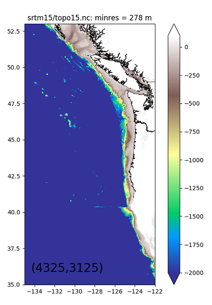
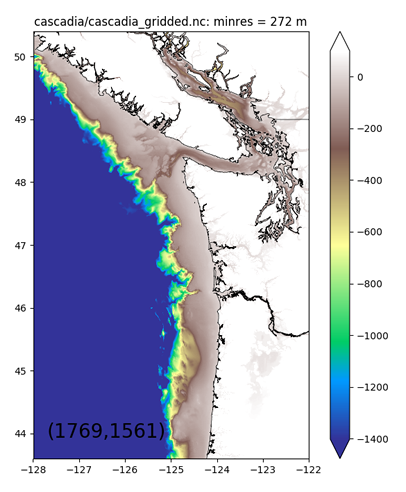
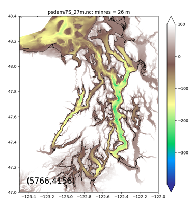
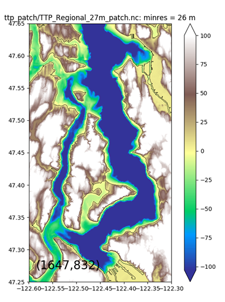

Topography files
These are NetCDF files of gridded bathymetry from a variety of different sources, with different spatial resoluton. They are useful for creating ROMS grid files. The default format of the processed files has vectors of decimal degree lat and lon (-180:180) and a matrix of z (meters, positive up, zero at about sea level). The matix of z is plaid in the matlab sense, and so only requires vectors of lat and lon to fully specfy location.
The current inventory of final files is shown below. The files are in ptools_data/topo/, each in a sub directory with the name shown in the title of the plot. Each sub directory also has pre-processing files and a README.
GLOBAL Resolution = 500 m A global dataset created from satellites and ship measurements. This is an updated version of the Smith & Sandwell bathymetry. Great coverage. Could be extracted over a larger domain. |
 |
REGIONAL Resolution = 0.4 km This is a combination of psdem (183 m), cascadia (250 m) and Smith and Sandwell (old version 2 km) created by Dave Sutherland for the MoSSea project.
|
 |
PUGET SOUND Resolution = 27 to 183 m From David Finlayson's PSDEM 2005 Puget Sound bathymetry. We have extractions at 27, 91, and 183 m resolution (even down to 9 m unprocessed). |
 |
LOCAL Resolution = 27 m Very high-resolution bathymetry from the R/V Thompson, processed by Sally Warner and interpolated onto the PSDEM 27 m data. The patch is only in a region of a few km around Three Tree Point. |
 |